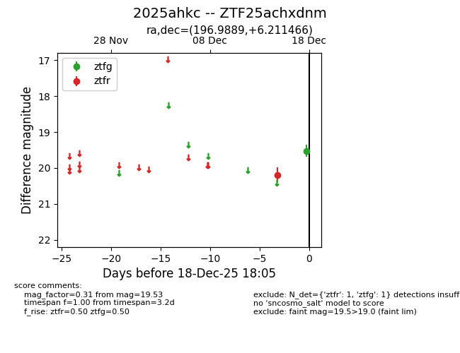
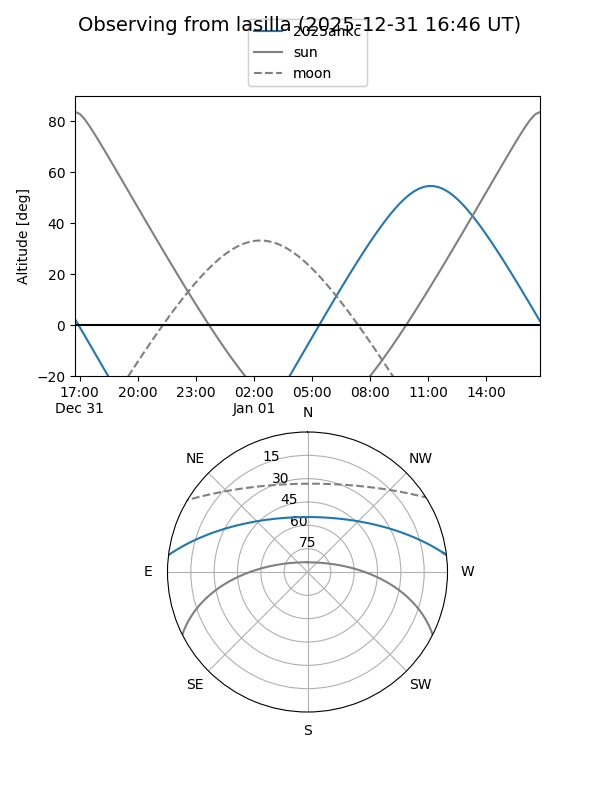
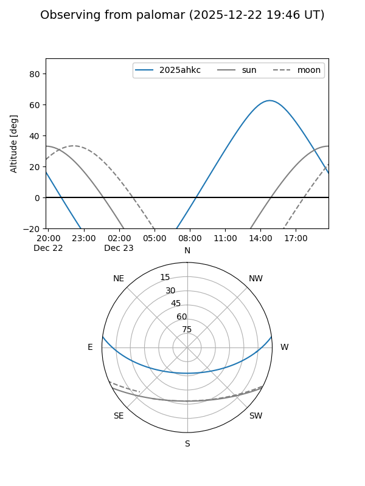
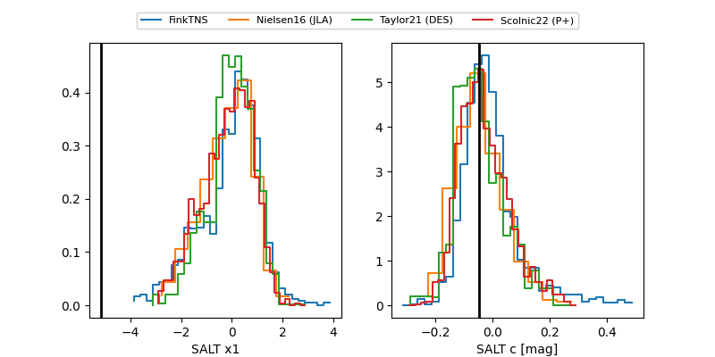

2025ahkc
Target 2025ahkc at 2025-12-18 16:34
Aliases and brokers:
FINK: fink-portal.org/ZTF25achxdnm
Lasair: lasair-ztf.lsst.ac.uk/objects/ZTF25achxdnm
ALeRCE: alerce.online/object/ZTF25achxdnm
TNS: wis-tns.org/object/2025ahkc
YSE: ziggy.ucolick.org/yse/transient_detail/2025ahkc
alt names
ZTF25achxdnm (ztf,fink_ztf)
2025ahkc (tns,yse)
Coordinates:
equatorial (ra, dec) = 196.9889,+6.21147
equatorial (HMS+DMS) = 13:07:57.33,+06:12:41.28
galactic (l, b) = (314.3068,+68.71764)
Photometry
last ztfg=19.53, ztfr=20.19
1 ztfg, 1 ztfr detections
Lightcurve

Visibility


Additional plots
